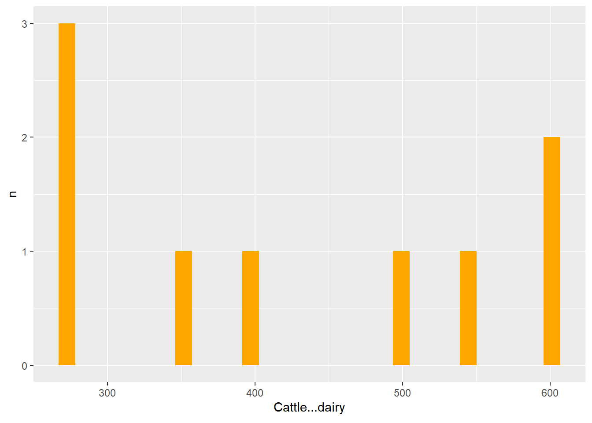
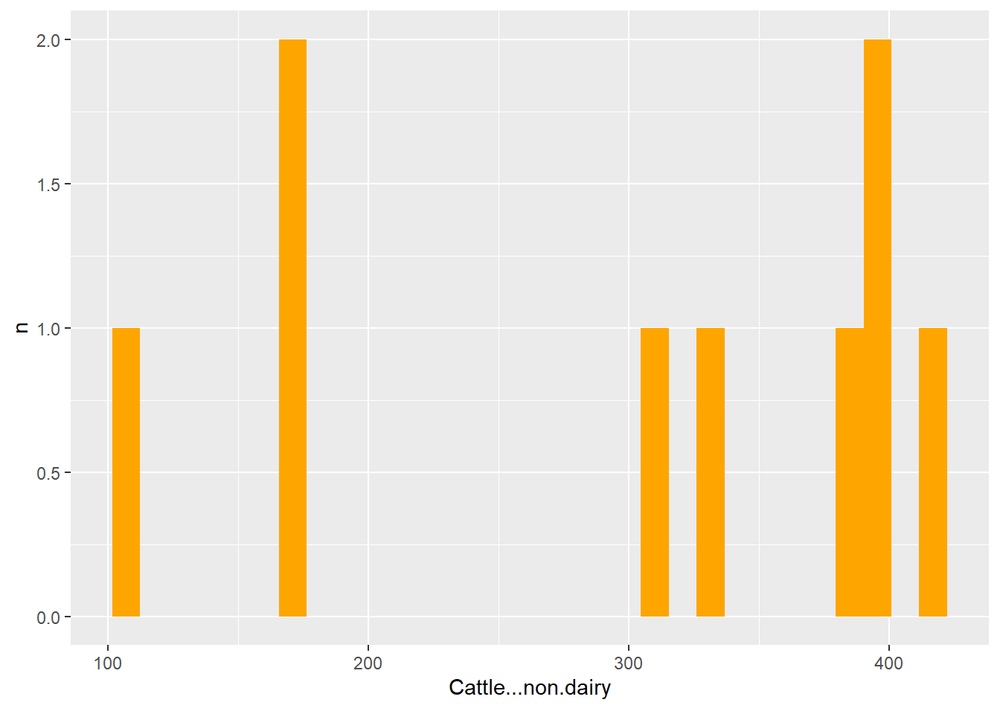
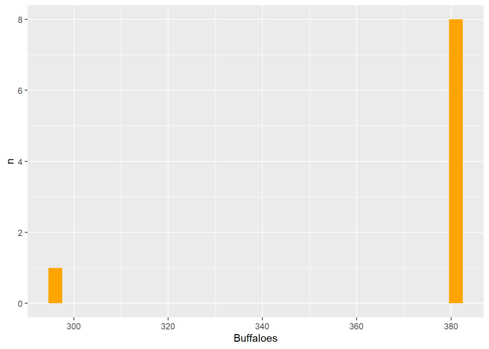
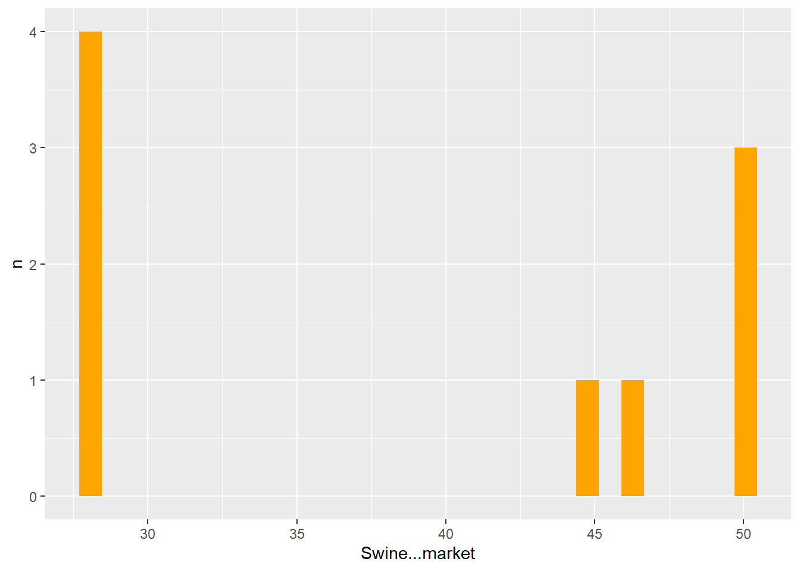
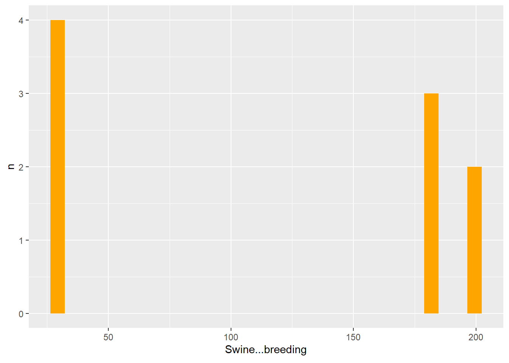
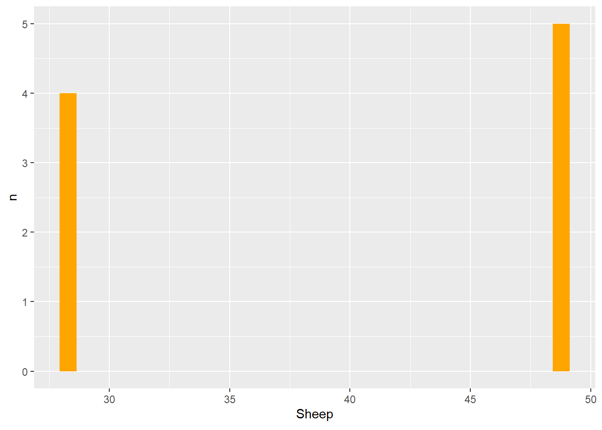
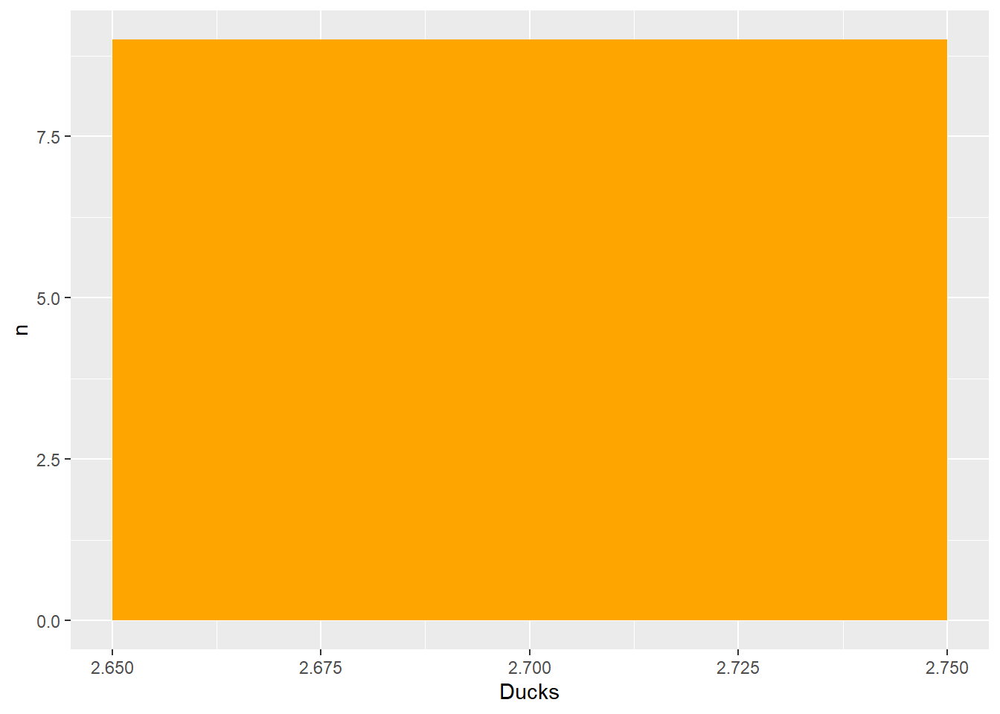
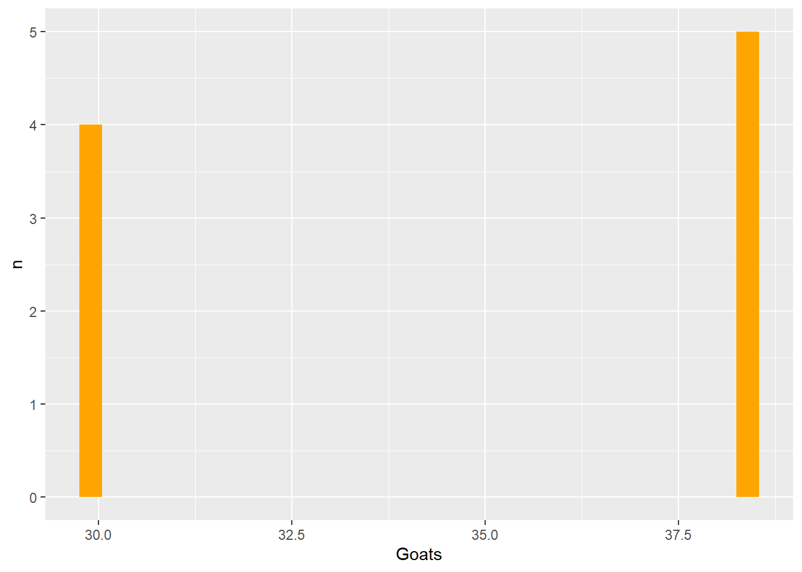
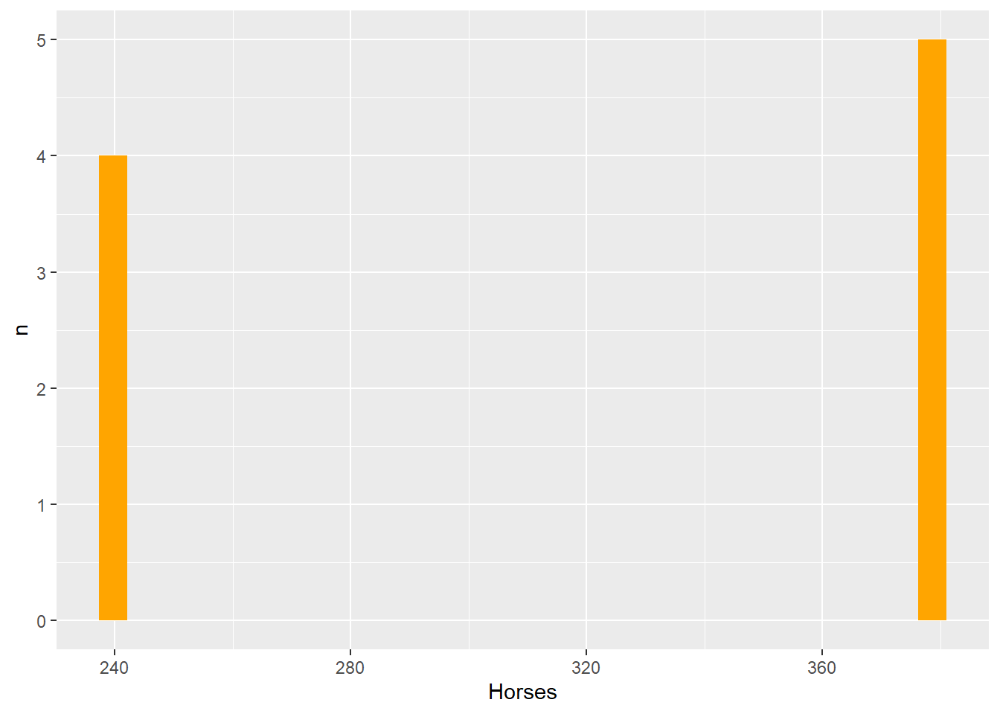
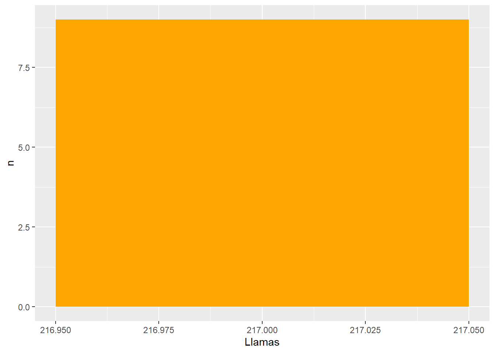

n <- 100 # sample size
m <- seq(1,10) # means
samps <- map(m,rnorm,n=n) Challenge 10 Post: Using Purr with the Aninal Weight Data
challenge_10
purrr
Challenge Overview
The purrr package is a powerful tool for functional programming. It allows the user to apply a single function across multiple objects. It can replace for loops with a more readable (and often faster) simple function call.
For example, we can draw n random samples from 10 different distributions using a vector of 10 means.
We can then use map_dbl to verify that this worked correctly by computing the mean for each sample.
samps %>%
map_dbl(mean) [1] 1.165970 2.131546 3.081201 4.069321 4.910645 6.153407 6.957024 8.056468
[9] 8.952136 9.954956purrr is tricky to learn (but beyond useful once you get a handle on it). Therefore, it’s imperative that you complete the purr and map readings before attempting this challenge.
The challenge
Use purrr with a function to perform some data science task. What this task is is up to you. It could involve computing summary statistics, reading in multiple datasets, running a random process multiple times, or anything else you might need to do in your work as a data analyst. You might consider using purrr with a function you wrote for challenge 9.
Reading in the Data
For this challenge, I am going to read in the animal_weight.csv dataset.
animalweight1 <- read.csv("_data/animal_weight.csv")
animalweight1Solution
We can split the animal weight dataset based on IPCC.Area, which would return 9 datasets for each of the 9 IPCC.Areas, which are large(r) global regions.
animalweight2_area <- split(animalweight1, animalweight1$IPCC.Area)
animalweight2_area$Africa
IPCC.Area Cattle...dairy Cattle...non.dairy Buffaloes Swine...market
3 Africa 275 173 380 28
Swine...breeding Chicken...Broilers Chicken...Layers Ducks Turkeys Sheep
3 28 0.9 1.8 2.7 6.8 28
Goats Horses Asses Mules Camels Llamas
3 30 238 130 130 217 217
$Asia
IPCC.Area Cattle...dairy Cattle...non.dairy Buffaloes Swine...market
7 Asia 350 391 380 50
Swine...breeding Chicken...Broilers Chicken...Layers Ducks Turkeys Sheep
7 180 0.9 1.8 2.7 6.8 48.5
Goats Horses Asses Mules Camels Llamas
7 38.5 377 130 130 217 217
$`Eastern Europe`
IPCC.Area Cattle...dairy Cattle...non.dairy Buffaloes Swine...market
2 Eastern Europe 550 391 380 50
Swine...breeding Chicken...Broilers Chicken...Layers Ducks Turkeys Sheep
2 180 0.9 1.8 2.7 6.8 48.5
Goats Horses Asses Mules Camels Llamas
2 38.5 377 130 130 217 217
$`Indian Subcontinent`
IPCC.Area Cattle...dairy Cattle...non.dairy Buffaloes
1 Indian Subcontinent 275 110 295
Swine...market Swine...breeding Chicken...Broilers Chicken...Layers Ducks
1 28 28 0.9 1.8 2.7
Turkeys Sheep Goats Horses Asses Mules Camels Llamas
1 6.8 28 30 238 130 130 217 217
$`Latin America`
IPCC.Area Cattle...dairy Cattle...non.dairy Buffaloes Swine...market
6 Latin America 400 305 380 28
Swine...breeding Chicken...Broilers Chicken...Layers Ducks Turkeys Sheep
6 28 0.9 1.8 2.7 6.8 28
Goats Horses Asses Mules Camels Llamas
6 30 238 130 130 217 217
$`Middle east`
IPCC.Area Cattle...dairy Cattle...non.dairy Buffaloes Swine...market
8 Middle east 275 173 380 28
Swine...breeding Chicken...Broilers Chicken...Layers Ducks Turkeys Sheep
8 28 0.9 1.8 2.7 6.8 28
Goats Horses Asses Mules Camels Llamas
8 30 238 130 130 217 217
$`Northern America`
IPCC.Area Cattle...dairy Cattle...non.dairy Buffaloes Swine...market
9 Northern America 604 389 380 46
Swine...breeding Chicken...Broilers Chicken...Layers Ducks Turkeys Sheep
9 198 0.9 1.8 2.7 6.8 48.5
Goats Horses Asses Mules Camels Llamas
9 38.5 377 130 130 217 217
$Oceania
IPCC.Area Cattle...dairy Cattle...non.dairy Buffaloes Swine...market
4 Oceania 500 330 380 45
Swine...breeding Chicken...Broilers Chicken...Layers Ducks Turkeys Sheep
4 180 0.9 1.8 2.7 6.8 48.5
Goats Horses Asses Mules Camels Llamas
4 38.5 377 130 130 217 217
$`Western Europe`
IPCC.Area Cattle...dairy Cattle...non.dairy Buffaloes Swine...market
5 Western Europe 600 420 380 50
Swine...breeding Chicken...Broilers Chicken...Layers Ducks Turkeys Sheep
5 198 0.9 1.8 2.7 6.8 48.5
Goats Horses Asses Mules Camels Llamas
5 38.5 377 130 130 217 217In Challenge 9, I created a function that could build a histogram for a variable which I will rework with slight adjustments below, this time using purr’s map () to help visualize the histograms for Cattle (dairy and non-dairy), Swine (market and breeding), Buffaloes, Sheep, Turkeys, Ducks, Horses, Goats, and Llamas. ## Function for Histogram
# Creating a function, build_histogram, to make a histogram
build_histogram <- function(data, col_name, title, fill="orange", xlab="x", ylab= "n") {
col_name <- rlang::ensym(col_name)
data %>%
ggplot(aes({{col_name}})) + geom_histogram(fill= fill)+ labs(x=col_name, y=ylab)
}Building Histogram
# building the histogram using map()
map(c("Cattle...dairy", "Cattle...non.dairy", "Buffaloes", "Swine...market", "Swine...breeding", "Sheep", "Turkeys", "Ducks", "Goats", "Horses", "Llamas"), ~build_histogram(dat=animalweight1, col_name=!!.x))[[1]]
[[2]]
[[3]]
[[4]]
[[5]]
[[6]]
[[7]]
[[8]]
[[9]]
[[10]]
[[11]]